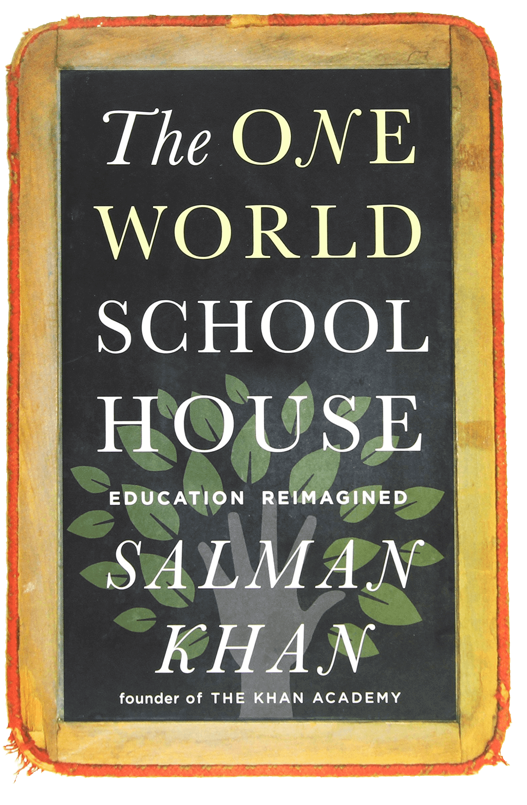

The biggest problem with education
Whether in school or university, the subject that nobody will teach you is how to become self-taught. We repeat specific exercises and memorize information without thinking and when it comes time for the exam, the goal is just to pass. But after the exam is over, that information is no longer useful, and there's no guarantee it will be retained. In the end, we're only really learning to pass our tests.
Here's the real question: does this approach of repetition and memorization really help us understand the subject? The current consensus in academia is that it doesn't. In fact, more important than any individual topic is knowing how to study, but for some reason this question is always left aside. So, what can we do to remedy this?
Well, there are several techniques and exercises that can be applied to the educational process to help make it more efficient and engaging. Keep reading to discover some of the secrets of effective learning.
Learning Techniques
The Five Strategies of Barbara Oakley

The Two Ways of Thinking
Deep understanding comes from the ability to alternate between diffuse and focused thinking.

Recall
Improving your ability to recall small important information helps connect different parts of the brain.

Interleaving
When you learn different skills at the same time, they strengthen one another.

Questions
When you're listening to your teacher, think of a good question, something you really would like to know.

Illusion of Competence
Test yourself, take notes, talk to another person, and repeat the process in different situations.
TED Talks
For the procrastination lovers
Barbara Oakley's Story
Mathematics did not come naturally to Barbara in childhood. She identified more with the humanities, and was not very brilliant at it. With the goal of specializing in linguistics, after finishing her studies, she enlisted in the Army, which sent her to learn Russian. After several years of service, becoming a captain, Barbara left the Army and decided to study engineering. It was during this time that she developed her learning methodology, because she needed to reprogram her brain for a different type of learning. When something does not occur naturally, then you must work hard to obtain the knowledge that other people can obtain quickly, thus giving a deeper and more comprehensive view of the subject.
The Feynman Technique
Learning without forgetting
More →Facts and figures
About the brain and learning
- 86 billion
- The number of neurons in the human brain
- 73%
- The percentage of adults in the US who consider themselves lifelong learners -
- Pew Research Center
- 1000 terabytes
- The storage capacity for information of a human
- 500 trillion
- The number of nerve synapses responsible for learning in an average adult human
- 420 million
- The number of adults under 25 without sufficient education to find jobs -
- World Bank, 2017
- 26 years old
- The age at which Albert Einstein published his groundbreaking article on special relativity
- 1885
- Development of the forgetting curve
- 1897
- Publication of Ivan Pavlov's research on classical conditioning
Salman Khan
The One World Schoolhouse
Sal Khan's passion and innovation is to transform learning for millions of students worldwide. A One World Schoolhouse is a must-read for all those committed to improving education so that students everywhere can acquire the skills and knowledge to succeed in school, in their careers, and in life.
George Lucas
Director

Buy →Ten principles for acquiring skills quickly
by Josh Kaufman
- 1
- Choose a project that interests you
- 2
- Focus your energy on one skill at a time
- 3
- Define your target level of performance
- 4
- Deconstruct the skill into sub-skills
- 5
- Obtain critical tools
- 6
- Eliminate barriers to practice
- 7
- Dedicate time to practice
- 8
- Create fast feedback cycles
- 9
- Practice using the clock, in short time intervals
- 10
- Emphasize quantity and speed